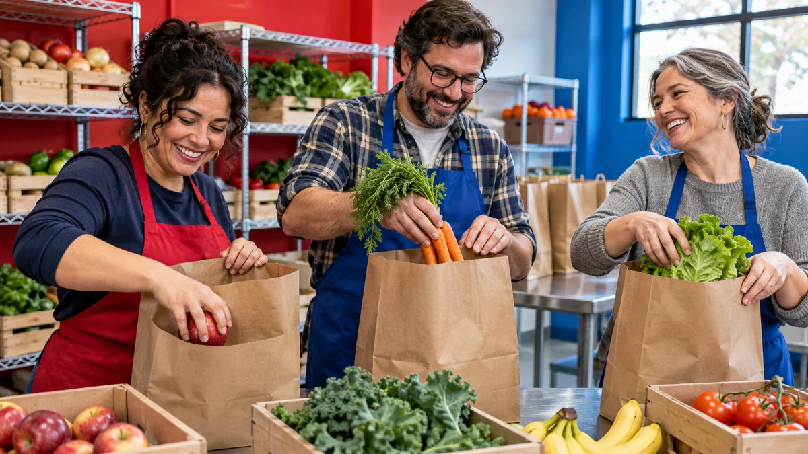

GOOD FOOD BELONGS TO EVERYONE
Pull up
a chair.
Weekly groceries and a welcome for every neighbor.

GET GROCERIES
Visit the pantry.
Drop in during open hours. A volunteer will help you choose groceries for your household.
- Wednesday
- 4–7 PM
- Saturday
- 10 AM–1 PM
LEND A HAND
Find a role that fits.
Sort & Stock
Unpack grocery deliveries and sort produce for pickup. Wednesday afternoons, two hours.
Welcome Neighbors
Greet visitors, explain how the pantry works, and help carry groceries. Saturday mornings, three hours.
Pick Up Donations
Help move boxed donations from local drop-off points to the pantry. Flexible weekday shifts.